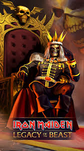

Legacy of the Beast
Iron Maiden

Legacy of the Beast World Tour es una gira de conciertos de la agrupación británica Iron Maiden
Calificación de 1 a 5: 5
Infierno
MotorHead

es el decimosexto álbum de la banda británica de rock Motörhead.
Fue lanzado al mercado en 2004, contiene algunas canciones dura
(como "Terminal Show" y "In the Name of Tragedy"), pero además de hard rock
("Killers", "Life's a Bitch"). "Whorehouse Blues" es una canción blues.
El guitarrista Steve Vai colabora en las pistas "Terminal Show" y "Down on Me"
Calificación de 1 a 5: 5